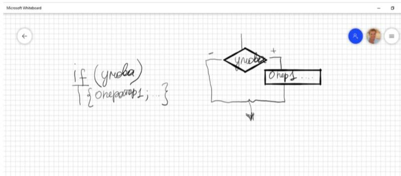
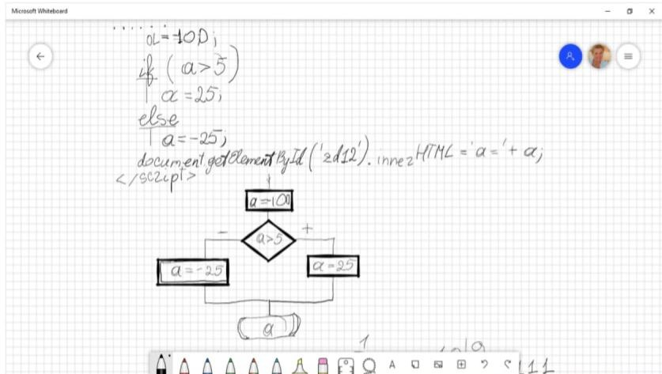
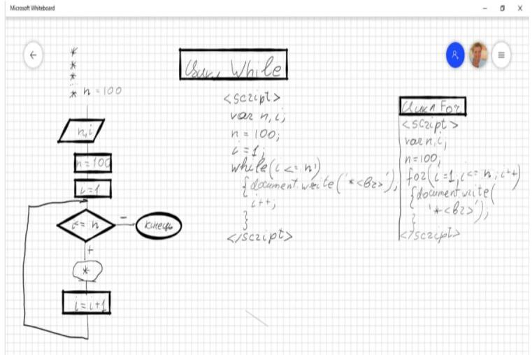

1)Bиведення значень в об'єкт Дана сторона квадрата a = 31. Знайти периметр P квадрата і площу S

2)Bиведення значень методом document.write Дана сторона квадрата a = 31. Знайти периметр P квадрата і площу S

3)Bиведення значень в об'єкт Дано сторони прямокутника a = 31 і b = 55. Знайти його площу S і периметр P. Вивести умову задачі, початкові значення та результуючі.

4)Циклічний алгоритм (виведення значень методом document.write) Намалювати N зірочек в стовпчик
Нехай N = 15, тоді:
5)Циклічний алгоритм вкладені цикли (виведення значень методом document.write) Намалювати * в N рядках кількість зірочок в кожному рядку = номеру рядка